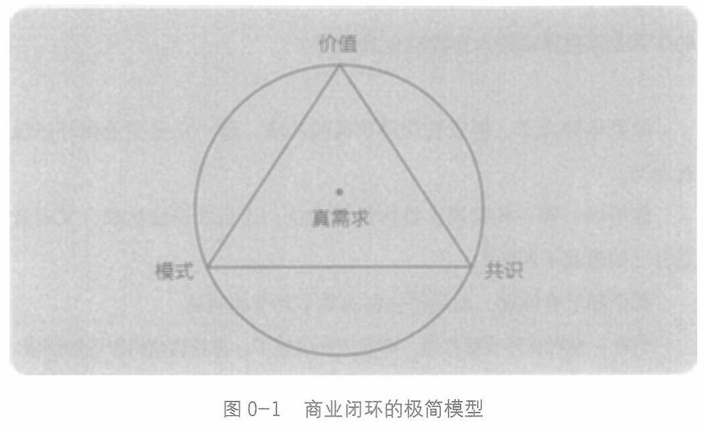

序 让生命绽放，让资源流动
公共的，供给是类似的，只有生存模式是自己的。
总结一下，在这个极简模型(见图0-1)里：
价值源自需求，因为被需求，所以有价值。
共识来自对分歧的超越，共识的成果是成交与关系。
模式是自己如何生存与发展，每个人、每个企业都是自身模式与环境互动下的产物。

把它们连在一起，就形成了一个商业闭环：洞察需求，提供价值；与客户/市场达成共识，获得成交和关系，因此获得钱与资源； 从而发展自己，投资自己的竞争力，让自己更具生存优势。
这就是在商业世界里生存的方法：创造价值，取得共识，获得资源，强化竞争力，构建生存的优势。
今天触目皆是的不安和焦虑，很多是出于对未来生存的恐惧。
如何获得安全感?
5